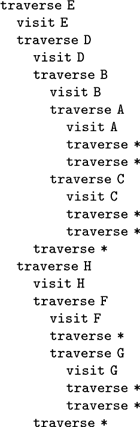
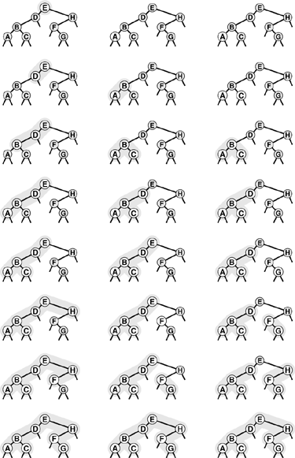
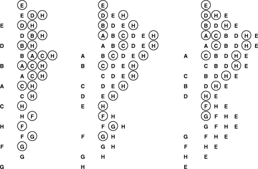
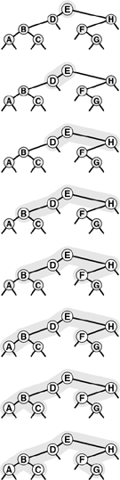
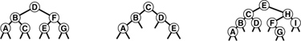

C++ Programming Robert Sedgewick - Princeton University Addison Wesley Professional Algorithms in C++, Parts 1–4: Fundamentals, Data Structure, Sorting, Searching, Third Edition
5.6. Tree Traversal
Before considering algorithms that construct binary trees and trees, we consider algorithms for the most basic tree-processing function: tree traversal: Given a pointer to a tree, we want to process every node in the tree systematically. In a linked list, we move from one node to the next by following the single link; for trees, however, we have decisions to make, because there may be multiple links to follow.
Program 5.14. Recursive tree traversal|
This recursive function takes a link to a tree as an argument and calls the function visit with each of the nodes in the tree as argument. As is, the function implements a preorder traversal; if we move the call to visit between the recursive calls, we have an inorder traversal; and if we move the call to visit after the recursive calls, we have a postorder traversal.
void traverse(link h, void visit(link))
{
if (h == 0) return;
visit(h);
traverse(h->l, visit);
traverse(h->r, visit);
}
|
We begin by considering the process for binary trees. For linked lists, we had two basic options (see Program 5.5): process the node and then follow the link (in which case we would visit the nodes in order), or follow the link and then process the node (in which case we would visit the nodes in reverse order). For binary trees, we have two links, and we therefore have three basic orders in which we might visit the nodes:
Preorder, where we visit the node, then visit the left and right subtrees Inorder, where we visit the left subtree, then visit the node, then visit the right subtree Postorder, where we visit the left and right subtrees, then visit the node
We can implement these methods easily with a recursive program, as shown in Program 5.14, which is a direct generalization of the linked-list–traversal program in Program 5.5. To implement traversals in the other orders, we permute the function calls in Program 5.14 in the appropriate manner. Figure 5.26 shows the order in which we visit the nodes in a sample tree for each order. Figure 5.25 shows the sequence of function calls that is executed when we invoke Program 5.14 on the sample tree in Figure 5.26.
This sequence of function calls constitutes preorder traversal for the example tree in Figure 5.26.

These sequences indicate the order in which we visit nodes for pre-order (left), inorder (center), and postorder (right) tree traversal.

We have already encountered the same basic recursive processes on which the different tree-traversal methods are based, in divide-and-conquer recursive programs (see Figures 5.8 and 5.11), and in arithmetic expressions. For example, doing preorder traversal corresponds to drawing the marks on the ruler first, then making the recursive calls (see Figure 5.11); doing inorder traversal corresponds to moving the biggest disk in the towers of Hanoi solution in between recursive calls that move all of the others; doing postorder traversal corresponds to evaluating postfix expressions, and so forth. These correspondences give us immediate insight into the mechanisms behind tree traversal. For example, we know that every other node in an inorder traversal is an external node, for the same reason that every other move in the towers of Hanoi problem involves the small disk.
It is also useful to consider nonrecursive implementations that use an explicit pushdown stack. For simplicity, we begin by considering an abstract stack that can hold items or trees, initialized with the tree to be traversed. Then, we enter into a loop, where we pop and process the top entry on the stack, continuing until the stack is empty. If the popped entity is an item, we visit it; if the popped entity is a tree, then we perform a sequence of push operations that depends on the desired ordering:
Program 5.15. Preorder traversal (nonrecursive)|
This nonrecursive stack-based function is functionally equivalent to its recursive counterpart, Program 5.14.
void traverse(link h, void visit(link))
{ STACK<link> s(max);
s.push(h);
while (!s.empty())
{
visit(h = s.pop());
if (h->r != 0) s.push(h->r);
if (h->l != 0) s.push(h->l);
}
}
|
For preorder, we push the right subtree, then the left subtree, and then the node. For inorder, we push the right subtree, then the node, and then the left subtree. For postorder, we push the node, then the right subtree, and then the left subtree.
We do not push null trees onto the stack. Figure 5.27 shows the stack contents as we use each of these three methods to traverse the sample tree in Figure 5.26. We can easily verify by induction that this method produces the same output as the recursive one for any binary tree.
These sequences indicate the stack contents for preorder (left), inorder (center), and postorder (right) tree traversal (see Figure 5.26), for an idealized model of the computation, similar to the one that we used in Figure 5.5, where we put the item and its two subtrees on the stack, in the indicated order.

The scheme described in the previous paragraph is a conceptual one that encompasses the three traversal methods, but the implementations that we use in practice are slightly simpler. For example, for preorder, we do not need to push nodes onto the stack (we visit the root of each tree that we pop), and we therefore can use a simple stack that contains only one type of item (tree link), as in the nonrecursive implementation in Program 5.15. The system stack that supports the recursive program contains return addresses and argument values, rather than items or nodes, but the actual sequence in which we do the computations (visit the nodes) is the same for the recursive and the stack-based methods.
Program 5.16. Level-order traversal|
Switching the underlying data structure in preorder traversal (see Program 5.15) from a stack to a queue transforms the traversal into a level-order one.
void traverse(link h, void visit(link))
{ QUEUE<link> q(max);
q.put(h);
while (!q.empty())
{
visit(h = q.get());
if (h->l != 0) q.put(h->l);
if (h->r != 0) q.put(h->r);
}
}
|
A fourth natural traversal strategy is simply to visit the nodes in a tree as they appear on the page, reading down from top to bottom and from left to right. This method is called level-order traversal because all the nodes on each level appear together, in order. Figure 5.28 shows how the nodes of the tree in Figure 5.26 are visited in level order.
This sequence depicts the result of visiting nodes in order from top to bottom and left to right in the tree.

Remarkably, we can achieve level-order traversal by substituting a queue for the stack in Program 5.15, as shown in Program 5.16. For preorder, we use a LIFO data structure; for level order, we use a FIFO data structure. These programs merit careful study, because they represent approaches to organizing work remaining to be done that differ in an essential way. In particular, level order does not correspond to a recursive implementation that relates to the recursive structure of the tree.
Preorder, postorder, and level order are well defined for forests as well. To make the definitions consistent, think of a forest as a tree with an imaginary root. Then, the preorder rule is "visit the root, then visit each of the subtrees," the postorder rule is "visit each of the subtrees, then visit the root." The level-order rule is the same as for binary trees. Direct implementations of these methods are straightforward generalizations of the stack-based preorder traversal programs (Programs 5.14 and 5.15) and the queue-based level-order traversal program (Program 5.16) for binary trees that we just considered. We omit consideration of implementations because we consider a more general procedure in Section 5.8.
Exercises |  5.79 Give preorder, inorder, postorder, and level-order traversals of the following binary trees: 5.79 Give preorder, inorder, postorder, and level-order traversals of the following binary trees:
 | | 5.80 Show the contents of the queue during the level order traversal (Program 5.16) depicted in Figure 5.28, in the style of Figure 5.27. | | 5.81 Show that preorder for a forest is the same as preorder for the corresponding binary tree (see Property 5.4), and that postorder for a forest is the same as inorder for the binary tree. | |  5.82 Give a nonrecursive implementation of inorder traversal. 5.82 Give a nonrecursive implementation of inorder traversal.
| |  5.83 Give a nonrecursive implementation of postorder traversal. 5.83 Give a nonrecursive implementation of postorder traversal.
| | 5.84 Write a program that takes as input the preorder and inorder traversals of a binary tree, and produces as output the level-order traversal of the tree. |
|